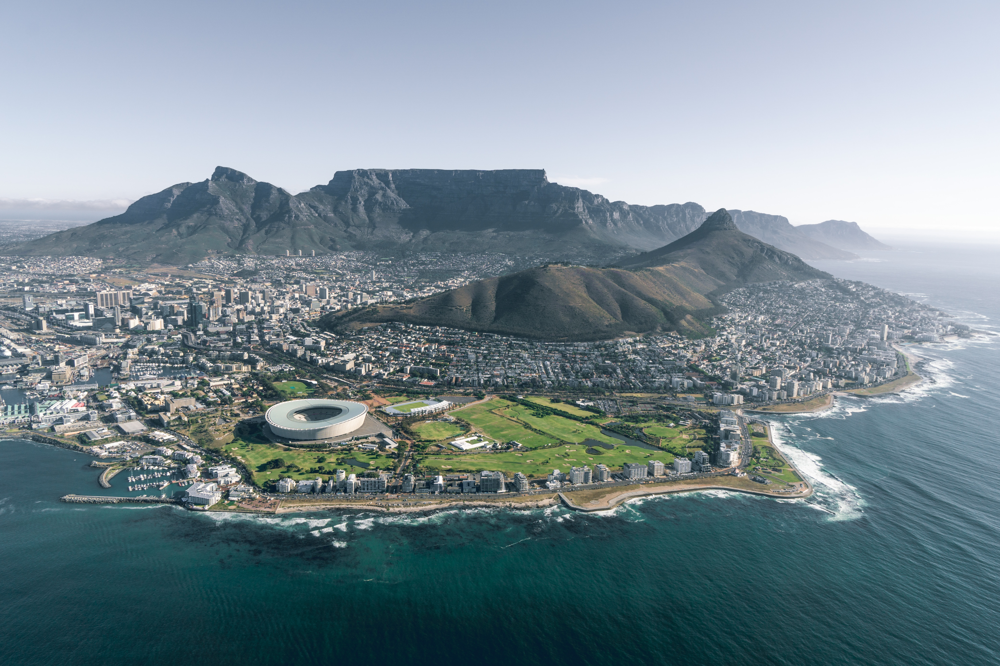

South Africa
Africa has great potentials and there is virtually no country without something interesting and exciting for tourists from all over the world to see. Tourism provides an opportunity for Africa to showcase itself to the rest of the world. Here, we have put together this information guide to unveil very interesting but yet unknown places to tourists that would like to visit Africa. It is one of those places which have a lot to offer you. It is especially true if you are looking for a thrilling holiday. It is often called “The World in One Country” because of its geographical and cultural diversity. From rich wildlife to breathtaking deserts to poignant museums, you name it, and you will find it. This place has it all!
